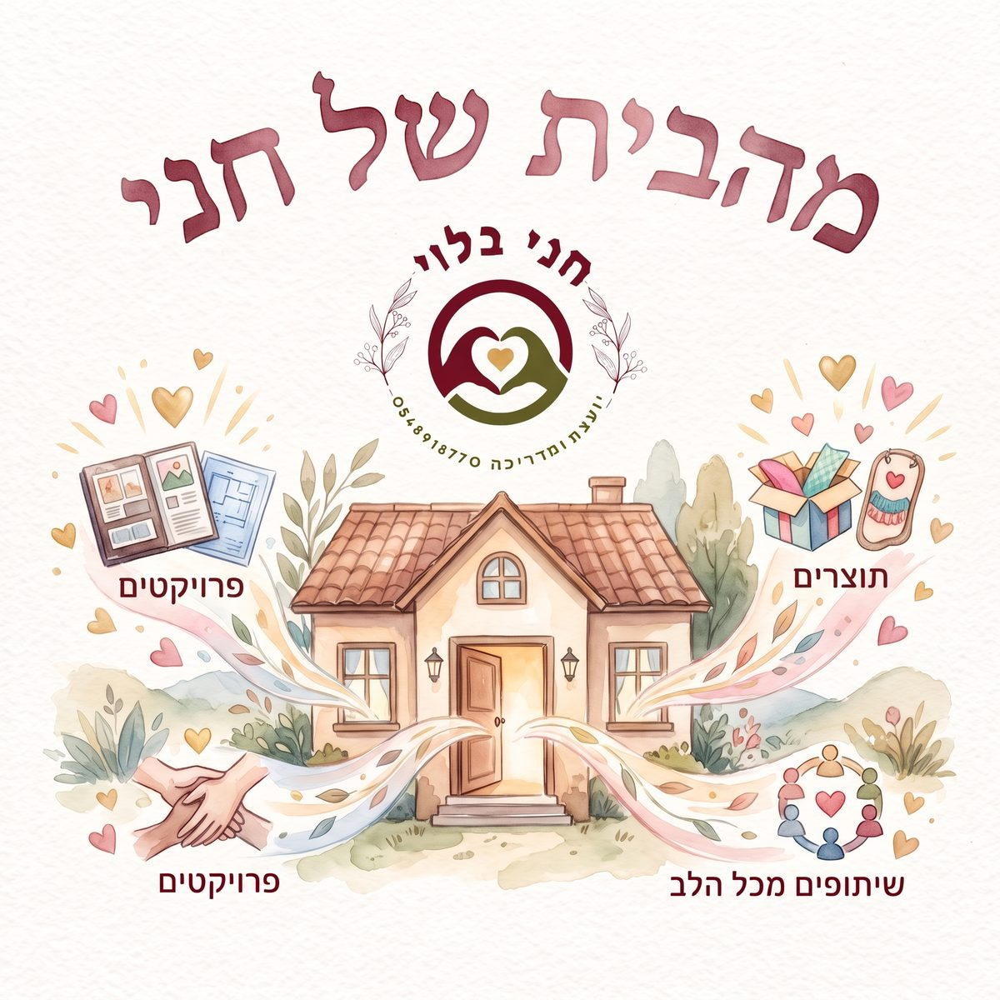

טוען את המאגר…

מאגר התוצרים של חני בלוי
כלים, מצגות והשראה ליועצות, מדריכות וצוותי חינוך
🔒 אזור אישי — מוצגים גם תוצרים שאינם ציבוריים
—תוצרים במאגר
—תחומי תוכן
—קהלי יעד
נעים להכיר, אני חני
אני חני בלוי, יועצת, מדריכה ומטמיעת כישורי חיים, ומאחוריי שנים של עבודה עם יועצות, מדריכות, גננות וצוותי חינוך — בשגרה, בחירום ובכל מה שביניהם. אני מאמינה שכלי טוב ברגע הנכון יכול לשנות שיחה, שיעור ולפעמים חיים שלמים.
המאגר הזה הוא הבית של מאות התוצרים שיצרתי לאורך הדרך: מערכי חוסן, כלים לצל"ח ולשעת חירום, שיעורי כישורי חיים, סדנאות לצוותים, פעילויות לחגים ועוד. הכל פתוח כאן בשבילכם ובשבילכן — חפשו, קחו והשתמשו.
רוצה להתייעץ? אני כאן — כתבו לי בוואטסאפ